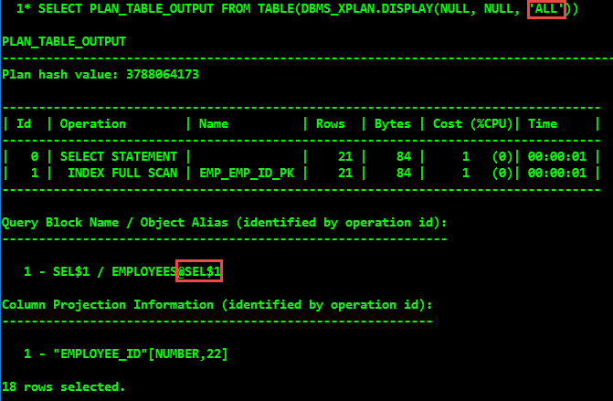

ORACLE INDEX
Created by Jongwon
INDEX?
An index is an optional structure,
associated with a table or table cluster,
that can sometimes speed data access
데이터가 매우 크다면?
200GB 정도 되는 인구 테이블
5억명 정도로 구성되어 있을 때
특정 사람들을 찾을 경우
데이터의 검색

Oracle Full-table scan
처음부터 하나하나 검색해야 한다.

Oracle Index access
Index를 통해 검색한다.
create index
CREATE [ UNIQUE | BITMAP ] INDEX [ schema. ] index
ON { cluster_index_clause
| table_index_clause
| bitmap_join_index_clause
}
[ UNUSABLE ] ;
ROWID
-- HR Schema
SELECT ROWID, employee_id, last_name
FROM employees;
테이블에 값이 실제로 저장되어 있지는 않은
pseudo column
ROWID
데이터 오브젝트 번호, 데이터 파일 번호, 블록 번호, 로우 번호를 포함

Index의 종류
- B*Tree Indexes
- Bitmap Indexes
- Function-Based Indexes
B*Tree Index
Binary Trees가 아닌 Balanced Trees
책 뒷면의 색인과 비슷한 방법
ROWID를 KEY 값과 함께 저장하는 인덱스 구조
Balanced Trees

branch blocks
하위 노드 Block을 찾아가기 위한 Data Block Address 정보를 갖는다.
leaf blocks
KEY 컬럼과 함께 해당 테이블 레코드를 찾아가기 위한 주소정보(ROWID)를 갖는다.
B*Tree Index subtypes
- Index-organized tables
- Reverse key Indexes
- Descending Indexes
- B*tree cluster Indexes
bitmap index
-- SH Schema
SELECT cust_id, cust_last_name, cust_matital_status, cust_gender
FROM customers
WHERE ROWNUM < 100
ORDER BY cust_id;

bitmap index
Distinct Value의 수가 적거나 DML문이 거의 사용되지 않는 경우
읽기 위주의 대용량 데이터 환경(Data Warehousing)에 적합
두개 이상의 Bitmap을 활용한 Bitwise 연산으로 여러 인덱스를 동시에 활용
bitmap index structure
아래 화면은 SH 스키마의 SALES_PROD_BIX 라는 BITMAP INDEX를 DUMP한 것입니다.
Function Based Index (FBI)
테이블에 Index를 생성할 때 하나 이상의 열에 함수나 expressions를 포함하는 것.
B*Tree Index나 Bitmap Index가 될 수 있다.
implicit 형변환 문제
-- SH Schema, SET AUTOTRACE ON
CREATE TABLE promotion_test AS SELECT * FROM PROMOTIONS;
ALTER TABLE promotion_test ADD v_category VARCHAR2(2);
UPDATE promotion_test SET v_category = promo_category_id;
CREATE INDEX before_test ON promotion_test(v_category);
SELECT promo_id, promo_name FROM promotion_test WHERE v_category = 10;
implicit 형변환 문제
DROP INDEX before_test;
CREATE INDEX after_test ON promotion_test(to_number(v_category));
SELECT promo_id, promo_name FROM promotion_test where v_category = 10;

index scan의 종류
- Index Range Scan
- Index Range Scan Descending
- Index Full Scan
- Index Unique Scan
- Index Fast Full Scan
- Index Skip Scan
Index Range Scan
Branch block을 수직적으로 스캔한 후 Leaf block에서 Key값의 범위만큼을 스캔
스캔 범위와 테이블 액세스 횟수가 속도의 관건
Index Range Scan Descending
Index Range Scan과 기본적으로 동일하나 Index를 뒤에서부터 스캔
ORDER BY ~ DESC 를 사용했을 경우
Index Full Scan
Leaf block을 처음부터 끝까지 수평적으로 스캔
테이블이 대용량인데 Key값을 이용한 조건절로 필터링되는 데이터가 극히 일부인 경우
Index Range Scan에서 Index를 구성하는 컬럼이 조건절에 사용되지 않았을 경우 발생
Index Unique Scan
수직적 스캔만으로 데이터를 찾는 방식
Unique Key를 통해 등호 조건으로 탐색하는 경우
Index Fast Full Scan
Index 트리 구조를 무시하고, 물리적으로 디스크에 저장된 순서대로 Leaf block을 스캔
Index Skip Scan

Root 또는 Branch block에서 읽은 Key값 정보를 이용해서
조건에 맞는 레코드를 포함하는 Leaf Block을 골라서 액세스
DIstinct Value가 적은 선행 Key가 조건절에서 누락됐고 후행 Key의 Distinct Value가 많을 때 효과적
INDEX 생성 지침
- 조건절에 항상 사용되거나, 자주 등장하는 컬럼을 선정한다.
- 등호 조건으로 자주 조회되는 컬럼들을 앞쪽에 둔다.
왜 Index가 사용되지 않았나
- Optimizer가 인덱스를 사용하기에 효율적이지 않다고 판단할 경우
- Function Based Index를 사용하지 않고 인덱스 컬럼을 조건절에서 가공할 경우
- is (not) null 조건이나 < > 비교를 사용할 경우
- Column에 산술 연산자(mathematical operation)를 사용했을 경우
- Column에 연결 연산자(concatenate)를 사용했을 경우
- 데이터 타입의 묵시적(implicit) 형변환
예외가 있을 수 있고, 정상적으로 인덱스 사용이 불가능할 뿐
사용자체가 불가능한 것은 아니다.
Hint
Comment를 사용하여 Optimizer가 HINT를 사용해 Execution Plan을 선택하게 할 수 있다.
INDEX Hint
|
tablespec::= |
indexspec::= |
query block
EXPLAIN PLAN FOR
SELECT employee_id FROM employees;

Index 조회
Data Dictionary의 뷰로 조회할 수 있다.
-- 현재 유저 내의 INDEX
DESC user_indexes
DESC user_ind_columns
-- 현재 유저의 권한으로 사용할 수 있는 모든 INDEX
DESC all_indexes
DESC all_ind_columns
-- 모든 유저의 INDEX
DESC dba_indexes
DESC dba_ind_columns
Clustering Factor
인접한 Leaf block들이 가리키는 Data block에 데이터가 밀집된 정도Heap-Organized Table vs Index-Organized Table
-- SH Schema
CREATE TABLE index_org_t (a PRIMARY KEY, b)
ORGANIZATION INDEX
AS SELECT promo_id, promo_name FROM promotions;
SELECT index_name, index_type, clustering_factor
FROM user_indexes
WHERE table_name IN ('PROMOTIONS','INDEX_ORG_T');
highlight
- KEY, ROWID
- Balanced Trees
- Bitmap Index
- Implicit Issue
- Index Scan
- Why Indexes Aren't Used
- HINT
- Clustering Factor
reference
- Oracle Concepts - Administering Oracle Indexes
- Index Column Order Does Matter
- Efficient SQL Statements
- Indexes and Index-Organized Tables
- 조시형. 『 오라클 성능 고도화 원리와 해법 I, II 』 비투엔컨설팅